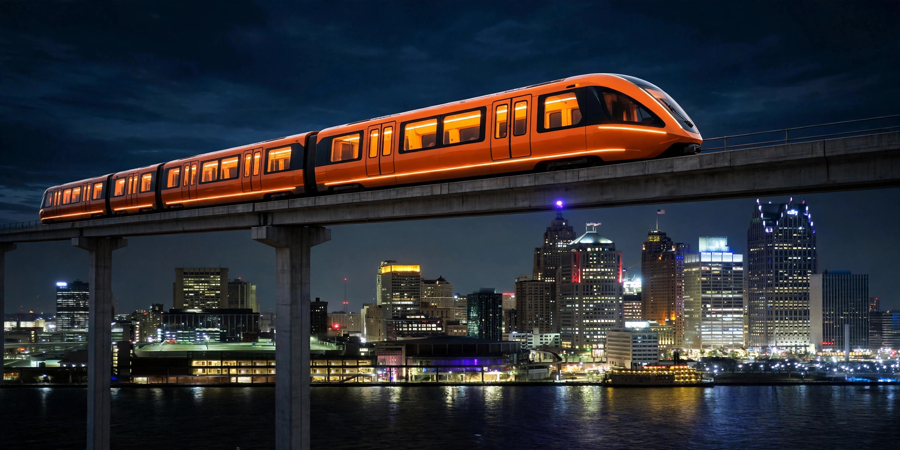

The Signal · Special Edition · October 2026
Every DDOT Bus, Live, in 3D
Published October 5, 2026 · By Justin Spencer Smith · Also on LinkedIn

Tonight we're opening the beta on something we've been building for weeks: a live 3D map of every DDOT bus route in Detroit — all 37 routes, drawn as elevated guideways over the actual streets, with real bus positions updating every 60 seconds.
It's here: detroitautomationacademy.com/live-transit.html
And as of this week, it's not just a map anymore. Hit Plan trip and it becomes a navigator.
What you're looking at
Thirty-seven colored routes across the whole city — the ten ConnectTen crosstown routes, the primary corridors like Woodward and Michigan Avenue, and seventeen neighborhood routes — with 5,120 stops plotted along them. Every glowing pillar on the map is a real bus, reporting its position right now.
Filter the map by group or by individual route. Click any bus and you'll get its vehicle number, the actual model (New Flyer XD40, XD60 articulated, Proterra electric — real fleet data), seating, speed, and heading. Zoom in close and the pillars resolve into true-scale bus bodies: a 40-foot bus rendered at a real 40 feet. Zoom out and you're looking at the whole system at once.
Routes with no buses out get out of the way on their own — they dim or hide automatically, and the filter panel tells you exactly how many routes are currently running.
Plan a trip, with live delays
The new Plan trip button runs a real trip planner (RAPTOR, the same algorithm family behind professional transit apps) on DDOT's actual schedule data — up to 3 itineraries, transfers included, drawn on the map as elevated guideways with a cinematic fly-through.
Here's the part we're proudest of: the planner watches the live buses. When a bus is matched to your trip, the times shift to reflect reality — a +8 min late badge on the leg, a data-age label ("live 45s old") so you know how fresh the reading is. If the bus is too far off schedule to trust, the leg gets flagged disrupted instead of showing you a fiction. And while you ride, the page guides you: board-soon alerts, alight-next callouts, and automatic replanning if a live delay costs you a transfer.
No account. No app install. Your origin and destination never leave your device.
The honest engineering
Positions come from DDOT's live vehicle feed, polled every 60 seconds and batched so the entire system costs four upstream requests a minute — the map will not get our API access revoked. Every position is also logged to a public dataset every five minutes, so the map paints instantly from the last logged positions while the live feed connects.
Schedules come from DDOT's GTFS feed, and the delay layer is pure measurement: we match each live bus to its scheduled trip by position, stop sequence, and headsign, then shift only the remaining stop times by the measured delay — clamped, smoothed across polls, and dropped entirely if the bus goes quiet. When the observed data isn't good enough to stand behind, the page says so instead of guessing.
Behind the scenes, every five minutes of observations feeds an empirical timing model — real segment-by-segment travel times, built from the buses themselves. Once a segment has enough observations, the planner will start preferring measured reality over the printed schedule. No deploy needed; the page just gets smarter.
This is a beta — break it
Open beta means we want your eyes on it. The most useful thing you can tell us: where the map disagrees with the street. A route drawn wrong, a bus that looks off its route, a stop in the wrong place — that's the feedback that makes it better.
New this week: tell us where the planner disagrees with reality. A delay badge that looks wrong, a transfer it should have caught, a trip that doesn't match what you rode — that's the feedback that trains the system.
Send it all to dbkr@umich.edu — a screenshot and the route number is plenty.
Why we're building this
In April, Detroit made every DDOT bus free for K–12 students. Show a school ID, ride anywhere the bus goes — no pass, no paperwork. The program is called Ride to Rise; it launched as a six-month pilot and now runs through the 2026–27 school year on $1 million in state funding. The city reported 44,000 student rides in the first month of the school year. SMART did the same for students across three counties in May — K–12 through college, no end date.
Free is the fare. The missing piece is navigation.
A student who has never ridden the bus doesn't need a timetable — they need to see the system. Which bus. Which direction. Whether it's actually coming. That's what this page is for: the map a first-time rider can read at a glance, with live buses, direction arrows, and the destination on every bus.
This is the academy's thesis in one page: real city data, rendered honestly, built in Detroit — in service of the kids who just got the keys to the system. The same feed powers a youth data-science module we're developing: students working with the same live buses they're riding. The pipeline starts with a seventh grader and a dataset.
Sources: DDOT live vehicle positions via Academy proxy; route/stop geography and schedules from DDOT GTFS feed S1000182 (valid 2026-09-07 → 2027-02-07); fleet model/seating via CPTDB Wiki DDOT roster; Ride to Rise — detroitmi.gov ride-to-rise page, Freep 4/6/2026, Chalkbeat 8/14/2026; SMART free student fares — Freep 4/30/2026, SMART partner toolkit.
The Signal is the newsletter of Detroit Automation Academy — where Detroit builds what's next. If you know a young builder who should be in the room, send them our way.